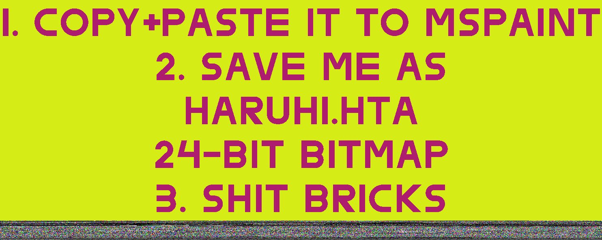

Haryhi.hta
Файл смертиСогласно источнику, если данное фото сохранить на персональном компьютере, и, открыв в Paint, переименовать в haruhi.hta, указать формат 24-bit bmp, и сохранить, то файл преобразуется в вирус, регистрируемый стандартными антивирусными программами.

Исследование
Ничего странного в поведении файла нет. Википедия говорит:
Так как приложения HTA поддерживают исполнение сценариев, они могут являться носителем вредоносного кода и могут использоваться для создания червей, работающих через почтовые программы.